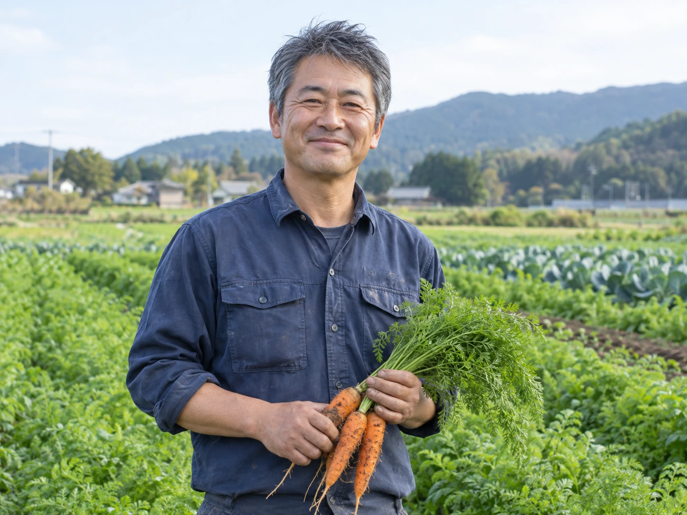
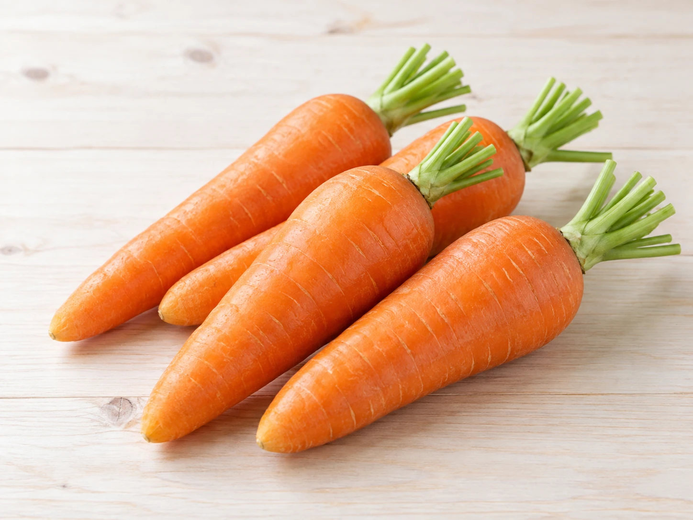

野菜
にんじん
180円（税込）
毎日の料理に使いやすい、旬のにんじん。煮物やスープ、サラダにも。
- 内容量
- 1袋
- 在庫目安
- 残り24点
- 売り場
- 野菜コーナー
- 最終更新
- 10月15日 9:10
在庫は来店までに変わる場合があります。取り置きは行っていません。
GROWER
この商品をつくった人
MORE ITEMS

野菜
180円（税込）
毎日の料理に使いやすい、旬のにんじん。煮物やスープ、サラダにも。
在庫は来店までに変わる場合があります。取り置きは行っていません。
